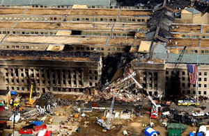

Eric Grondin, 18 Septembre 2001, 12h15l

Voici le résultat d'un sondage qui donne une idée vers où on s'en va...CNN
How should the U.S. respond if Afghanistan fails to turn over Osama bin Laden?
Increased diplomatic pressure 19% 101537 votes
A quick tactical strike aimed at capturing or killing bin Laden 30% 162898 votes
Massive military action against Afghanistan 52% 283340 votes
Total: 547,775 votes
This QuickVote is not scientific and reflects the opinions of only those Internet users who have chosen to participate.